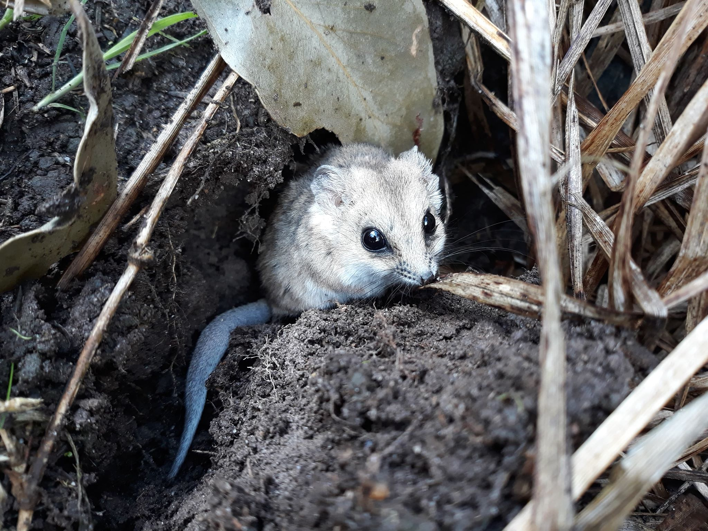
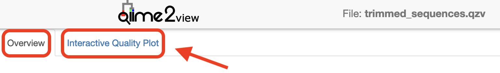
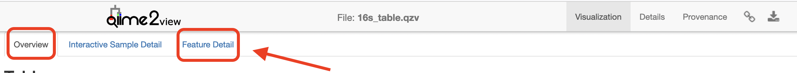
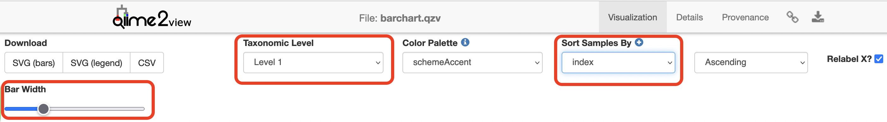
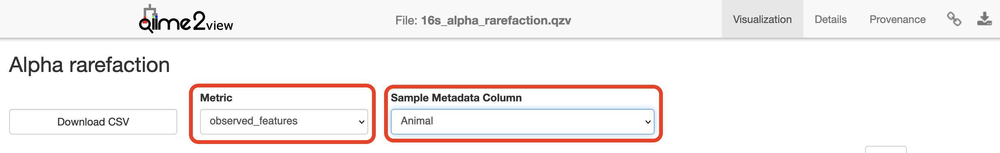
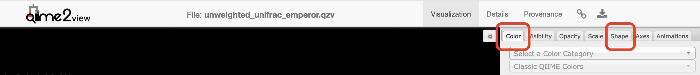
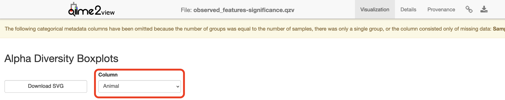
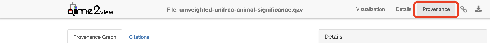

Metabarcoding of bacteria in dunnart faecal samples across Australia (wild + captive) using QIIME 2
OverviewQuestions:
Objectives:
Why is the fat-tailed dunnart a useful system for investigating host-associated microbiomes in a conservation context?
How might captivity alter the gut microbiome?
How is taxonomy assigned to representative ASV sequences, and why does the choice of reference database and classifier matter?
How does sequencing depth influence estimates of microbial diversity, and how should an appropriate sampling depth be selected?
Do captive and wild dunnarts differ in alpha diversity (within-sample diversity) or beta diversity (between-sample diversity)?
Which microbial taxa appear to differ between captive and wild animals?
Which QIIME 2 outputs are useful for downstream analyses and visualisation in R?
Requirements:
Import paired-end 16S rRNA gene amplicon data and associated sample metadata into QIIME2 within Galaxy.
Remove primer sequences using Cutadapt.
Select quality filtering and truncation parameters based on the characteristics of the sequencing run to be applied in DADA2.
Evaluate sequence-processing outputs to assess read retention and identify potential problems.
Assign taxonomy to ASVs using a pre-trained classifier appropriate for the amplified 16S rRNA gene region.
Generate and interpret taxonomic composition summaries across samples and experimental groups.
Construct a phylogenetic tree and explain why phylogeny is required for metrics such as Faith’s PD and UniFrac.
Use feature-table summaries and rarefaction curves to select an appropriate sampling depth for diversity analyses.
Calculate and compare alpha and beta diversity between captive and wild animals.
Test differences in community composition using PERMANOVA and understand the importance of evaluating dispersion.
Identify differentially abundant taxa using ANCOM-BC2 and distinguish differential abundance from overall community-level differences.
Export feature tables, taxonomy, representative sequences and phylogenetic trees for downstream analysis in R.
Time estimation: 3 hoursSupporting Materials:Published: Oct 7, 2026Last modification: Oct 7, 2026License: Tutorial Content is licensed under Creative Commons Attribution 4.0 International License. The GTN Framework is licensed under MITversion Revision: 1
Background
What is the influence of captivity on gut microbiota of the fat-tailed dunnart?
The Players

(Photo credit: Emily Scicluna)Fat-tailed dunnart Sminthopsis crassicaudata - a species of mouse-like marsupial in the family Dasyuridae, which includes quolls, the Tasmanian devil, and the extinct Thylacine. There are 10 samples in this dataset (This data is a subset from a larger experiment); 5 faecal samples each from captive and wild fat-tailed dunnarts.
The Study
Indigenous microbial communities (microbiota) play critical roles in host health. Small marsupials, such as the fat-tailed dunnart, are increasingly used as model systems to understand how environmental conditions shape host-associated microbiomes. Transitions between wild and captive environments can substantially alter diet, behaviour, and microbial exposure, providing a natural framework to investigate microbiome restructuring and its potential consequences for host physiology and health. Here, we characterise the gut microbiome of wild and captive fat-tailed dunnarts to assess how captivity influences microbial community composition. This dataset represents a subset of a larger experimental framework examining microbiome-mediated effects on host function and conservation outcomes.
QIIME 2 Analysis platform
Comment: QIIME2 VersionThe version used in this workshop is
qiime2-2026.1. Other versions of QIIME2 may result in minor differences in results.
Quantitative Insights Into Microbial Ecology 2 (QIIME 2) is a next-generation microbiome bioinformatics platform that is extensible, free, open source, and community developed. It allows researchers to:
- Automatically track analyses with decentralised data provenance
- Interactively explore data with beautiful visualisations
- Easily share results without QIIME 2 installed
- Plugin-based system — researchers can add in tools as they wish
Viewing QIIME2 visualisations
In order to use QIIME 2 View to visualise your files, you will need to use a Google Chrome or Mozilla Firefox web browser (not in private browsing). As this tutorial uses Galaxy Australia, you will need to download the visual files (*.qzv) to your local computer and view them in QIIME 2 View (q2view).
We will be doing this step multiple times throughout this workshop to view visualisation files as they are generated.
Comment: The QIIME vizualisation extractor ToolWithin Galaxy, the QIIME vizualisation extractor tool can be used to view QIIME2
.qzvvisualisation files. However, some QIIME2 visualisation files will not properly display or will lose some of the visualisation’s interactive features.
This Galaxy tutorial based on material from the Metabarcoding of bacteria in dunnart faecal samples across Australia (wild + captive) tutorial and workshop created by Melbourne Bioinformatics at the University of Melbourne.
AgendaIn this tutorial, we will deal with:
Data upload
These dunnart faecal samples were sequenced on a single Illumina NextSeq run at the Walter and Eliza Hall Institute (WEHI), Melbourne, Australia. Data from WEHI came as paired-end, demultiplexed, unzipped *.fastq files with adapters still attached. Following the QIIME2 importing tutorial, this is the Casava One Eight format. The files have been renamed to satisfy the Casava format as SampleID_FWDXX-REVXX_L001_R[1 or 2]_001.fastq (e.g. CTRLA_Fwd04-Rev25_L001_R1_001.fastq.gz). The files were then zipped (.gzip).
Here, the data files (two per sample, i.e. forward and reverse reads R1 and R2 respectively) will be imported and exported as a single QIIME 2 artefact file. These samples are already demultiplexed (i.e. sequences from each sample have been written to separate files), so a metadata file is not initially required.
Hands On: Data upload
Create a new history
To create a new history simply click the new-history icon at the top of the history panel:
Import datasets from Zenodo.
https://zenodo.org/records/23175186/files/D01_FWD09_REV01_L001_R1_001.fastq.gz https://zenodo.org/records/23175186/files/D01_FWD09_REV01_L001_R2_001.fastq.gz https://zenodo.org/records/23175186/files/D06_FWD09_REV06_L001_R1_001.fastq.gz https://zenodo.org/records/23175186/files/D06_FWD09_REV06_L001_R2_001.fastq.gz https://zenodo.org/records/23175186/files/D08_FWD09_REV08_L001_R1_001.fastq.gz https://zenodo.org/records/23175186/files/D08_FWD09_REV08_L001_R2_001.fastq.gz https://zenodo.org/records/23175186/files/D09_FWD09_REV09_L001_R1_001.fastq.gz https://zenodo.org/records/23175186/files/D09_FWD09_REV09_L001_R2_001.fastq.gz https://zenodo.org/records/23175186/files/D11_FWD09_REV11_L001_R1_001.fastq.gz https://zenodo.org/records/23175186/files/D11_FWD09_REV11_L001_R2_001.fastq.gz https://zenodo.org/records/23175186/files/D13_FWD10_REV01_L001_R1_001.fastq.gz https://zenodo.org/records/23175186/files/D13_FWD10_REV01_L001_R2_001.fastq.gz https://zenodo.org/records/23175186/files/D14_FWD10_REV02_L001_R1_001.fastq.gz https://zenodo.org/records/23175186/files/D14_FWD10_REV02_L001_R2_001.fastq.gz https://zenodo.org/records/23175186/files/D17_FWD10_REV05_L001_R1_001.fastq.gz https://zenodo.org/records/23175186/files/D17_FWD10_REV05_L001_R2_001.fastq.gz https://zenodo.org/records/23175186/files/D19_FWD10_REV07_L001_R1_001.fastq.gz https://zenodo.org/records/23175186/files/D19_FWD10_REV07_L001_R2_001.fastq.gz https://zenodo.org/records/23175186/files/D20_FWD10_REV08_L001_R1_001.fastq.gz https://zenodo.org/records/23175186/files/D20_FWD10_REV08_L001_R2_001.fastq.gz https://zenodo.org/records/23175186/files/dunnart_metadata.tsv https://zenodo.org/records/23175186/files/silva_138.2_16s_v4_classifier.qza
- Copy the link location
Click galaxy-upload Upload at the top of the activity panel
- Select galaxy-wf-edit Paste/Fetch Data
Paste the link(s) into the text field
Press Start
- Close the window
Create a paired collection of the imported raw reads (
.fastq.gz) datasets.
- Click on galaxy-selector Select Items at the top of the history panel
- Check all the datasets in your history you would like to include
Click n of N selected and choose Advanced Build List
You are in the collection building wizard. Choose List of Paired Datasets and click ‘Next’ button at the right bottom corner.
Check and configure auto-pairing. Commonly matepairs have suffix
_1and_2or_R1and_R2. Click on ‘Next’ at the bottom.
- Edit the List Identifier as required.
- Enter a name for your collection
- Click Build to build your collection
- Click on the checkmark icon at the top of your history again


Importing, cleaning and quality control of the data
Remove primers
Comment: Check with Sequencing FacilityRemember to ask your sequencing facility if the raw data you get has the primers attached - they may have already been removed.
These sequences still have the primers attached and must be removed prior to denoising.
For this workshop, we perform primer trimming using the Cutadapt tool in Galaxy. Amplicons were generated using standard 16S rRNA gene primers for the v4 region, and the reads returned from the sequencer therefore include these primer sequences at the 5′ ends. Using Cutadapt, the specified primer sequence and any bases upstream of the match are removed, with an error rate of 0.10 to balance sensitivity of primer detection with specificity of trimming. Degenerate bases in the primers are accommodated using wildcard matching, and any reads lacking the expected primer sequences are discarded to minimise inclusion of off-target amplification products. A modest 3′ quality trimming threshold (Phred score = 20) is also applied to remove low-quality bases prior to downstream denoising.
It is important to note that these data were generated on an Illumina NextSeq platform, which uses 2-colour chemistry and can produce artificial poly-G tails at the ends of reads under low-signal conditions. We use standalone Cutadapt tool instead of qiime2 cutadapt trim-paired because the QIIME2 implementation does not have the “NextSeq trimming” parameter (the --nextseq-trim flag if running Cutadapt via command line), which is specifically designed to remove these artificial poly-G tails.
Hands On: Run Cutadapt
- Cutadapt ( Galaxy version 5.2+galaxy2):
- “Single-end or Paired-end reads?”:
Paired-End Collection- param-collection “Paired Collection”:
paired reads(the collection you just created)- “Read 1 Adapters”:
+ Insert 5' (Front) Adapters"
- “1: 5’ (Front) Adapters”
- “Source”:
Enter Custom Sequence- “Custom 5’ adapter sequence “:
GTGYCAGCMGCCGCGGTAA- “Read 2 Adapters”:
+ Insert 5' (Front) Adapters"
- “1: 5’ (Front) Adapters”
- “Source”:
Enter Custom Sequence- “Custom 5’ adapter sequence “:
GGACTACNVGGGTWTCTAAT- “Adapter Handling Options”
- “Maximum error rate”:
0.1- “Minimum overlap length”:
10- “Match wildcards in adapters”:
Yes- “Other Read Trimming Options”
- “Quality cutoff(s) (R1)”:
0,30- “NextSeq trimming”:
20- “Read Filtering Options”
- “Discard Untrimmed Reads”:
YesRename galaxy-pencil the output to:
trimmed pairs
- Click on the galaxy-pencil pencil icon for the dataset to edit its attributes
- In the central panel, change the Name field
- Click the Save button
Comment: PrimersThe primers specified are the Earth Microbiome Project (EMP) 16S V4 primers (515F (Parada)– 806R (Apprill) targeting the v4 region of the bacterial 16S rRNA gene), which correspond to this specific experiment. Unless you are using these exact primers for your experiment, you will need to replace the “Custom 5’ adapter sequence” with the primers used in your experiment.
Comment: Error Rate and OverlapThe error rate (“Maximum error rate”) and overlap (“Minimum overlap length”) parameters will likely need to be adjusted for your own sample data to maximise the proportion of reads successfully trimmed while avoiding nonspecific matches. Play around with these values and see what happens.
The following step shows the tool set up for running qiime2 cutadapt trim-paired to perform a simplified trimming approach without the “NextSeq trimming” option. However, for production analyses of NextSeq data, best practice is to perform trimming with the standalone Cutadapt (including “NextSeq trimming”) prior to importing reads into QIIME 2, as this improves removal of sequencing artefacts and can enhance downstream denoising and taxonomic resolution.
Note, qiime2 cutadapt trim-paired requires the input reads to be stored as a single QIIME2 artefact (e.g.
combined.qza), not a dataset collection as used by Cutadapt. A QIIME2 artefact can be created from a dataset collection using qiime2 tools import as shown below in Hands On: Create QIIME2 Artefact.Hands On: Run Cutadapt
- qiime2 cutadapt trim-paired ( Galaxy version 2026.1.0+q2galaxy.2026.1.0):
- “demultiplexed_sequences: SampleData[PairedEndSequencesWithQuality]”:
combined.qza- “Click here for additional options”
- “front_f: List[Str]”:
+ Insert front_f: List[Str]"
- “1: front_f: List[Str]”:
GTGYCAGCMGCCGCGGTAA- “front_r: List[Str]”:
+ Insert front_r: List[Str]"
- “1: front_r: List[Str]”:
GGACTACNVGGGTWTCTAAT- “error_rate: Float % Range(0, 1, inclusive_end=True)”:
0.1- “overlap: Int % Range(1, None)”:
10- “match_adapter_wildcards: Bool”:
Yes- “discard_untrimmed: Bool”:
Yes- “quality_cutoff_5end: Int % Range(0, None)”:
0- “quality_cutoff_3end: Int % Range(0, None)”:
30- Rename galaxy-pencil the output to:
trimmed_sequences.qza
Comment: Quality ControlWhen processing your own data, you should inspect the quality of your datasets before and after running Cutadapt in order to determine the parameters to set for Cutadapt and then to ensure that Cutadapt has adequately cleaned your data. These quality control steps can be done using the tools FastQC and MultiQC. The tutorial Quality Control describes these tools and the output QC plots the tools produce.
Create a QIIME2 Artefact
QIIME2 requires .fastq.gz sequence datasets to follow the CASAVA file naming format (SampleID_FWDXX-REVXX_L001_R[1 or 2]_001.fastq, e.g. D01_FWD09_REV01_L001_R1_001.fastq.gz) in order to import .fastq.gz sequence datasets into the QIIME2 artefact format (.qza), which is the data format used by the QIIME2 suite of tools. Generally a single .qza QIIME2 artefact will be created that contains all of the .fastq.gz sample datasets to be processed.
In Galaxy, the .fastq.gz datasets can be provided as an input to the import tool, qiime2 tools import, either as individual datasets (although this requires manually specifying each dataset to be included) or as a dataset collection (recommended method). The input dataset collection must be a list collection even when using paired-end reads.
The following steps reformat the paired-end collection of .fastq.gz trimmed sequences produced by Cutadapt to a flat list collection and rename the datasets within the list collection to satisfy the CASAVA format requirements.
Hands On: Prepare Collection for QIIME2
- Flatten collection:
- “Input Collection”:
trimmed pairsRename galaxy-pencil the output to:
trimmed pairs flattened- Extract element identifiers ( Galaxy version 0.0.3):
- “Dataset collection”:
trimmed pairs flattenedRename galaxy-pencil the output to:
collection identifiers- Regex Find And Replace ( Galaxy version 1.0.3):
- “Select lines from”: Output of
collection identifiers- “Check”:
+ Insert Check
- “Find Regex”:
001_forward- “Replacement”:
R1_001.fastq.gz- “Check”:
+ Insert Check
- “Find Regex”:
001_reverse- “Replacement”:
R2_001.fastq.gzRename galaxy-pencil the output to:
corrected identifiers- Paste:
- “Paste”:
collection identifiers- “and”:
corrected identifiers- “Delimit by”:
TabRename galaxy-pencil the output to:
identifier mappingChange galaxy-pencil the
identifier mappingdatatype/format totabular(the default output format of Paste istxt).
- Click on the galaxy-pencil pencil icon for the dataset to edit its attributes
- In the central panel, click galaxy-chart-select-data Datatypes tab on the top
- In the galaxy-chart-select-data Assign Datatype, select
tabularfrom “New Type” dropdown
- Tip: you can start typing the datatype into the field to filter the dropdown menu
- Click the Save button
- Relabel identifiers:
- “Input Collection”:
trimmed sequences flattened- “How should the new labels be specified?”:
Map original identifiers to new ones using a two-column table
- “Identifier mapping”:
identifier mapping- Rename galaxy-pencil the output to:
trimmed sequences
Once the collection of trimmed .fastq.gz sequences is correctly named to import into QIIME2, we use the qiime2 tools import tool to create a single QIIME2 artefact file (.qza) containing all the trimmed sequences.
Hands On: Create a QIIME2 Artefact
- qiime2 tools import ( Galaxy version 2026.1.0+dist.h02a552c2):
- “Type of data to import”:
SampleData[PairedEndSequencesWithQuality]- “QIIME 2 file format to import from”:
Casava One Eight Single Lane Per Sample Directory Format- “Import sequences”
- “Select a mechanism”:
Use collection to import- “elements”:
trimmed sequences- “Append an extension?”:
No, use element identifiers as is(If the datasets in the collection include the extension.fastq.gz)- Rename galaxy-pencil the output to:
trimmed_sequences.qzaCommentWhen providing an input collection for
qiime2 tools import, if the datasets in the collection DO NOT include the extension.fastq.gz, then this extension must been appended to each dataset identifier to conform to the CASAVA format.
- “Append an extension?”:
Yes
- “Extension to append (e.g. ‘.fastq.gz’)”:
.fastq.gz
Create and interpret sequence quality data
Create a viewable summary file so the data quality can be checked. Viewing the quality plots generated here helps determine settings for dada2, which we will run next.
Trimmed sequences are processed using the DADA2 plugin within QIIME2. DADA2 denoises data by modelling and correcting Illumina amplicon sequencing errors, and infers exact amplicon sequence variants (ASVs), resolving differences of as little as a single nucleotide. Its workflow includes filtering, dereplication, paired-end read merging, and reference-free chimera detection, resulting in a feature (ASV) table.
Truncation removes bases from the 3′ end of reads at the specified position. When choosing DADA2 truncation lengths, the first step is to inspect the forward and reverse quality plots you just created. In many modern Illumina datasets, especially after primer and basic quality trimming, these plots may appear relatively flat with consistently high quality across most of the read length. In these cases, there is no obvious “cut point” where quality sharply declines. Instead of looking for a specific quality threshold (for example, Q35), you should choose truncation lengths conservatively, trimming only the very ends of reads if needed while retaining as much high-quality sequence as possible without compromising read overlap.
For paired-end data, an additional and critical consideration is read overlap. After truncation, the forward and reverse reads must still overlap sufficiently to merge. While the absolute minimum overlap is ~12 bp, an overlap of ~50 bp is recommended to ensure robust merging and reduce the risk of losing reads during this step. As a result, truncation lengths are often chosen by balancing two factors: maintaining high-quality sequence and preserving enough overlap for successful merging.
TL;DR: when quality plots are essentially straight lines, truncation is less about identifying where quality drops and more about keeping as much usable sequence as possible while ensuring adequate overlap between reads.
Things to look for when choosing truncation lengths
- Do the forward and reverse quality profiles show a clear decline near the ends of the reads? If so, truncate before the low-quality tail.
- If the quality profiles remain high and relatively flat, avoid trimming too aggressively and retain as much high-quality sequence as possible.
- Will the chosen forward and reverse truncation lengths still leave enough overlap for paired-end merging? A minimum overlap of ~50 bp is recommended.
Hands On: Summarise Trimmed Sequences
- qiime2 demux summarize ( Galaxy version 2026.1.0+q2galaxy.2026.1.0):
- “data: SampleData[SequencesWithQuality | PairedEndSequencesWithQuality | JoinedSequencesWithQuality]”:
trimmed_sequences.qzaRename galaxy-pencil the output to:
trimmed_sequences.qzv- Visualisations: Read quality and demux output
- Download
trimmed_sequences.qzvto your local computer and view in QIIME 2 View (q2view).- Click to view the
trimmed_sequences.qzvfile in QIIME 2 View.- Make sure to switch between the “Overview” and “Interactive Quality Plot” tabs in the top left hand corner. Click and drag on the plot to zoom in. Double click to zoom back out to full size. Hover over a box to see the parametric seven-number summary of the quality scores at the corresponding position.

Denoising the data
CommentThis step may take a long time to run (i.e. hours), depending on file sizes and available computational power.
In the following command, a pooling method (“pooling_method”) of pseudo is selected. Pseudo-pooling improves sensitivity to shared low-abundance ASVs across samples while remaining computationally efficient. This is better than the default of independent (where samples are denoised independently) when you expect samples in the run to have similar ASVs overall.
Comment: Precomputed DADA2 Denoising ResultsThe following DADA2 denoising step can take a long time to run (~1h). You can either wait for this step to run or import the results from a previous run of qiime2 dada2 denoise-paired.
Hands On: Import denoised dataset files
Import the DADA2 output table, representative sequences and denoising stats files from Zenodo:
https://zenodo.org/records/23175186/files/dada2out_table.qza https://zenodo.org/records/23175186/files/dada2out_representative_sequences.qza https://zenodo.org/records/23175186/files/dada2out_denoising_stats.qza
Hands On: DADA2 Denoise Sequences
- qiime2 dada2 denoise-paired ( Galaxy version 2026.1.0+q2galaxy.2026.1.0):
- “demultiplexed_seqs: SampleData[PairedEndSequencesWithQuality]”:
trimmed_sequences.qza- “trunc_len_f: Int”:
210- “trunc_len_r: Int”:
170- “Click here for additional options”
- “pooling_method: Str % Choices(‘independent’, ‘pseudo’)”:
pseudoRename galaxy-pencil the
table.qzaoutput to:dada2out_table.qzaRename galaxy-pencil the
representative_sequences.qzaoutput to:dada2out_representative_sequences.qza- Rename galaxy-pencil the
denoising_stats.qzaoutput to:dada2out_denoising_stats.qzaComment: Calculating truncation lengthsRemember to adjust
trunc_len_fandtrunc_len_raccording to your own data.Overlap = (forward truncation length + reverse truncation length) − amplicon length.
For this amplicon, the expected length is ~255 bp. Try a few sensible truncation-length combinations and compare read retention and merging success.
Generate summary files
A metadata file is required which provides the key to gaining biological insight from your data. The file
Things to look for
- How many features (ASVs) were generated? Does this seem reasonable for the sample type? High-diversity communities will usually yield more ASVs than low-diversity communities, but very large numbers can also reflect residual noise or non-target amplification.
- Do the representative sequences make biological sense? Taxonomic assignments or BLAST hits should broadly match the expected environment or host (for example, marine, soil, gut, or terrestrial communities).
- How many reads were retained after filtering, denoising, merging, and chimera removal? If a large proportion of reads were lost (for example, >50%), this may indicate that trimming or truncation settings were too stringent, read quality was poor, or overlap between forward and reverse reads was insufficient.
- Did most samples retain enough reads for downstream analysis? Samples with very low final read counts may still be usable in some contexts, but they should be interpreted cautiously and may need to be excluded later.
Hands On: Tabulate Denoising Stats
- qiime2 metadata tabulate ( Galaxy version 2026.1.0+q2galaxy.2026.1.0):
- “1: input: Metadata”
- “input: Metadata”:
Metadata from Artifact- “Metadata Source”:
dada2out_denoising_stats.qzaRename galaxy-pencil the output to:
16s_denoising_stats.qzv- Visualisation: Denoising Stats
- Download
16s_denoising_stats.qzvto your local computer and view in QIIME 2 View (q2view).- Click to view the
16s_denoising_stats.qzvfile in QIIME 2 View.
Hands On: Summarise DADA2 Table
- qiime2 feature-table summarize ( Galaxy version 2026.1.0+q2galaxy.2026.1.0):
- “table: FeatureTable[Frequency | PresenceAbsence]”:
dada2out_table.qza- “Click here for additional options”
- “1: input: Metadata”
- “input: Metadata”:
Metadata from TSV- “Metadata Source”:
dunnart_metadata.tsvRename galaxy-pencil the output to:
summary_table.qzv- Visualisation: Feature/ASV summary
- Download
summary_table.qzvto your local computer and view in QIIME 2 View (q2view).- Click to view the
summary.qzvfile in QIIME 2 View.- Make sure to switch between the “Overview” and “Feature Detail” tabs in the top left hand corner.

Hands On: Tabulate Representative Sequences
- qiime2 feature-table tabulate-seqs ( Galaxy version 2026.1.0+q2galaxy.2026.1.0):
- “data: FeatureData[Sequence | AlignedSequence]”:
dada2out_representative_sequences.qzaRename galaxy-pencil the output to:
16s_representative_seqs.qzv- Visualisation: Representative Sequences
- Download
16s_representative_seqs.qzvto your local computer and view in QIIME 2 View (q2view).- Click to view the
16s_representative_seqs.qzvfile in QIIME 2 View.
Taxonomic Analysis
Assign taxonomy
Here we will classify each identical read or Amplicon Sequence Variant (ASV) to the highest resolution based on a database. Common databases for bacteria datasets are SILVA, Ribosomal Database Project*, or Genome Taxonomy Database. See Porter and Hajibabaei, 2020 for a review of different classifiers for metabarcoding research. The classifier chosen is dependent upon:
- Previously published data in a field
- The target region of interest
- The number of reference sequences for your organism in the database and how recently that database was updated.
A classifier has already been trained for you for the V4 region of the bacterial 16S rRNA gene using the SILVA database. The next step will take a while to run.
Comment: *A Note on the Ribosomal Data ProjectAs of the time of writing, the Ribosomal Data Project website is no longer available. You can find a standalone version of the RDP Classifier 2.14 released in August 2023 on Sourgeforce and Zenodo.
CommentThe classifier used here is only appropriate for the specific 16S rRNA region that this data represents. You will need to train your own classifier for your own data. For more information about training your own classifier, see Details: Train the SILVA v138 Classifier for 16S/18S rRNA Gene Marker Sequences.
Hands On: Classify Taxonomy
- qiime2 feature-classifier classify-sklearn ( Galaxy version 2026.1.0+q2galaxy.2026.1.0):
- “reads: FeatureData[Sequence]”:
dada2out_representative_sequences.qza- “classifier: TaxonomicClassifier”:
silva_138.2_16s_v4_classifier.qza- Rename galaxy-pencil the output to:
taxonomy_classification.qza
Generate a viewable summary file of the taxonomic assignments.
Hands On: Tabulate Taxonomic Assignments
- qiime2 metadata tabulate ( Galaxy version 2026.1.0+q2galaxy.2026.1.0):
- “1: metadata: Metadata”
- “metadata: Metadata”:
Metadata from Artifact- “Metadata Source”:
taxonomy_classification.qzaRename galaxy-pencil the output to:
taxonomy.qzv- Visualisation: Taxonomy
- Download
taxonomy.qzvto your local computer and view in QIIME 2 View (q2view).- Click to view the
taxonomy.qzvfile in QIIME 2 View.
Filtering
Filter out reads classified as mitochondria and chloroplast. Unassigned ASVs are retained. Generate a viewable summary file of the new table to see the effect of filtering. According to QIIME developer Nicholas Bokulich, low abundance filtering (i.e. removing ASVs containing very few sequences) is not necessary under the ASV model.
Hands On: Filter Taxonomic Table
- qiime2 taxa filter-table ( Galaxy version 2026.1.0+q2galaxy.2026.1.0):
- “table: FeatureTable[Frequency¹ | PresenceAbsence²]”:
dada2out_table.qza- “taxonomy: FeatureData[Taxonomy]”:
classification.qza- “Click here for additional options”
- “exclude: Str”:
Provide a value- “exclude”:
Mitochondria,ChloroplastRename galaxy-pencil the output to:
16s_table_filtered.qza- qiime2 feature-table summarize ( Galaxy version 2026.1.0+q2galaxy.2026.1.0):
- “table: FeatureTable[Frequency | PresenceAbsence]”:
16s_table_filtered.qza- “Click here for additional options”
- “1: metadata: Metadata”
- “metadata: Metadata”:
Metadata from TSV- “Metadata Source”:
dunnart_metadata.tsvRename galaxy-pencil the output to:
summary_filtered.qzv- Visualisation: Filtered Summary
- Download
summary_filtered.qzvto your local computer and view in QIIME 2 View (q2view).- Click to view the
summary_filtered.qzvfile in QIIME 2 View.
This section contains information on how to train the classifier for analysing your own data.
The newest version of the SILVA database (v138) can be trained to classify marker gene sequences originating from the 16S/18S rRNA gene. Reference files
silva-138-99-seqs.qzaandsilva-138-99-tax.qzawere downloaded from SILVA and imported to get the artefact files. You can download both these files uploaded to Dropbox by Melbourne Bioinformatics.Hands On: Train ClassifierReads for the region of interest are first extracted. You will need to input your forward and reverse primer sequences. See QIIME2 documentation for more information.
- qiime2 feature-classifier extract-reads ( Galaxy version 2026.1.0+q2galaxy.2026.1.0):
- “sequences: FeatureData[Sequence]”:
silva-138-99-seqs.qza- “f_primer: Str”:
FORWARD_PRIMER_SEQUENCE- “r_primer: Str”:
REVERSE_PRIMER_SEQUENCE- Rename galaxy-pencil the output to:
silva_138_marker_gene.qzaThe classifier is then trained using a naive Bayes algorithm. See QIIME2 documentation for more information.
- qiime2 feature-classifier fit-classifier-naive-bayes ( Galaxy version 2026.1.0+q2galaxy.2026.1.0):
- “reference_reads: FeatureData[Sequence]”:
silva_138_marker_gene.qza- “reference_taxonomy: FeatureData[Taxonomy]”:
silva-138-99-tax.qza- “r_primer: Str”:
REVERSE_PRIMER_SEQUENCE- Rename galaxy-pencil the output to:
silva_138_marker_gene_classifier.qza
Build a Phylogenetic Tree
The next step does the following:
- Perform an alignment on the representative sequences.
- Mask sites in the alignment that are not phylogenetically informative.
- Generate a phylogenetic tree.
- Apply mid-point rooting to the tree.
A phylogenetic tree is necessary for any analyses that incorporates information on the relative relatedness of community members, by incorporating phylogenetic distances between observed organisms in the computation. This would include any beta-diversity analyses and visualisations from a weighted or unweighted Unifrac distance matrix.
Hands On: Tabulate Taxonomic Assignments
- qiime2 phylogeny align-to-tree-mafft-fasttree ( Galaxy version 2026.1.0+q2galaxy.2026.1.0):
- “sequences: FeatureData[Sequence]”:
dada2out_representative_sequences.qzaRename galaxy-pencil the
rooted_tree.qzaoutput to:16s_rooted_tree.qzaRename galaxy-pencil the
tree.qzaoutput to:16s_unrooted_tree.qzaRename galaxy-pencil the
masked_alignment.qzaoutput to:masked_aligned_16s_representative_seqs.qza- Rename galaxy-pencil the
alignment.qzaoutput to:aligned_16s_representative_seqs.qza
Basic Visualisations and Statistics
ASV relative abundance bar charts
Create bar charts to compare the relative abundance of ASVs across samples.
Hands On: Taxonamy Barplot
- qiime2 taxa barplot ( Galaxy version 2026.1.0+q2galaxy.2026.1.0):
- “table: FeatureTable[Frequency | PresenceAbsence]”:
16s_table_filtered.qza- “Click here for additional options”
- “taxonomy: FeatureData[Taxonomy]”:
taxonomy_classification.qza- “1: metadata: Metadata”
- “metadata: Metadata”:
Metadata from TSV- “Metadata Source”:
dunnart_metadata.tsvRename galaxy-pencil the output to:
barchart.qzv- Visualisation: Taxonomy Barplots
- Download
barchart.qzvto your local computer and view in QIIME 2 View (q2view). Try selecting different taxonomic levels and metadata-based sample sorting.- Click to view the
barchart.qzvfile in QIIME 2 View.- Increase the “Bar Width”, select “Captivity” in “Sort Samples By” drop-down menu and explore the resulting barplots by changing the levels in the “Change Taxonomic Level” dropdown menu (Select Level 1, then Level 3, and then Level 5 for example).

Rarefaction curves
Generate rarefaction curves to determine whether the samples have been sequenced deeply enough to capture all the community members. The max depth setting will depend on the number of sequences in your samples.
Things to look for
- Do the curves for each sample plateau? If they don’t, the samples haven’t been sequenced deeply enough to capture the full diversity of the bacterial communities, which is shown on the y-axis.
- At what sequencing depth (x-axis) do your curves plateau? This value will be important for downstream analyses, particularly for alpha diversity analyses.
Comment: Specifying a Max Depth ValueThe value that you provide for “max_depth” should be determined by reviewing the “Frequency per sample” information presented in the
summary.qzvfile that was created above after filtering. In general, choosing a value that is somewhere around the median frequency seems to work well, but you may want to increase that value if the lines in the resulting rarefaction plot don’t appear to be levelling out, or decrease that value if you seem to be losing many of your samples due to low total frequencies closer to the minimum sampling depth than the maximum sampling depth.
Hands On: Alpha Diversity Rarefaction
- qiime2 diversity alpha-rarefaction ( Galaxy version 2026.1.0+q2galaxy.2026.1.0):
- “table: FeatureTable[Frequency]”:
16s_table_filtered.qza- “max_depth: Int % Range(1, None)”:
200000- “Click here for additional options”
- “phylogeny: Phylogeny[Rooted]”:
16s_rooted_tree.qza- “1: metadata: Metadata”
- “metadata: Metadata”:
Metadata from TSV- “Metadata Source”:
dunnart_metadata.tsv- “min_depth: Int % Range(1, None)”:
500- “steps: Int % Range(2, None)”:
40Rename galaxy-pencil the output to:
16s_alpha_rarefaction.qzv- Visualisation: Rarefaction
- Download
16s_alpha_rarefaction.qzvto your local computer and view in QIIME 2 View (q2view). Try selecting different taxonomic levels and metadata-based sample sorting.- Click to view the
16s_alpha_rarefaction.qzvfile in QIIME 2 View.- Select “Animal” in the “Sample Metadata Column” and “observed_features” under “Metric”:

Alpha and beta diversity analysis
The following is taken from the Moving Pictures tutorial and adapted for this data set. QIIME 2’s diversity analyses are available through the q2-diversity plugin, which supports computing alpha- and beta- diversity metrics, applying related statistical tests, and generating interactive visualisations. We’ll first apply the core-metrics-phylogenetic method, which rarefies a FeatureTable[Frequency] to a user-specified depth, computes several alpha- and beta- diversity metrics, and generates principle coordinates analysis (PCoA) plots using Emperor for each of the beta diversity metrics.
The metrics computed by default are:
- Alpha diversity (operate on a single sample (i.e. within sample diversity)).
- Shannon’s diversity index (a quantitative measure of community richness)
- Observed OTUs (a qualitative measure of community richness)
- Faith’s Phylogenetic Diversity (a qualitative measure of community richness that incorporates phylogenetic relationships between the features)
- Evenness (or Pielou’s Evenness; a measure of community evenness)
- Beta diversity (operate on a pair of samples (i.e. between sample diversity)).
- Jaccard distance (a qualitative measure of community dissimilarity)
- Bray-Curtis distance (a quantitative measure of community dissimilarity)
- unweighted UniFrac distance (a qualitative measure of community dissimilarity that incorporates phylogenetic relationships between the features)
- weighted UniFrac distance (a quantitative measure of community dissimilarity that incorporates phylogenetic relationships between the features)
An important parameter that needs to be provided to this script is “sampling_depth: Int % Range(1, None)”, which is the even sampling (i.e. rarefaction) depth that was determined above. As most diversity metrics are sensitive to different sampling depths across different samples, this script will randomly subsample the counts from each sample to the value provided for this parameter. For example, if “sampling_depth: Int % Range(1, None)”: 500 is provided, this step will subsample the counts in each sample without replacement, so that each sample in the resulting table has a total count of 500. If the total count for any sample(s) are smaller than this value, those samples will be excluded from the diversity analysis. Choosing this value is tricky. We recommend making your choice by reviewing the information presented in the summary.qzv file that was created above. Choose a value that is as high as possible (so more sequences per sample are retained), while excluding as few samples as possible.
Hands On: Phylogenetic Metrics
- qiime2 diversity core-metrics-phylogenetic ( Galaxy version 2026.1.0+q2galaxy.2026.1.0):
- “table: FeatureTable[Frequency]”:
16s_table_filtered.qza- “phylogeny: Phylogeny[Rooted]”:
16s_rooted_tree.qza- “sampling_depth: Int % Range(1, None)”:
100000- “1: metadata: Metadata”
- “metadata: Metadata”:
Metadata from TSV- “Metadata Source”:
dunnart_metadata.tsvRename galaxy-pencil the
qiime2 ... unweighted_unifrac_emperor.qzvoutput to:unweighted_unifrac_emperor.qzv(i.e. only keep the last part)Rename galaxy-pencil the
qiime2 ... weighted_unifrac_emperor.qzaoutput to:weighted_unifrac_emperor.qzaRename galaxy-pencil the
qiime2 ... jaccard_emperor.qzvoutput to:jaccard_emperor.qzvRename galaxy-pencil the
qiime2 ... bray_curtis_emperor.qzvoutput to:bray_curtis_emperor.qzvRename galaxy-pencil the
qiime2 ... observed_features_vector.qzaoutput to:observed_features_vector.qzaRename galaxy-pencil the
qiime2 ... evenness_vector.qzaoutput to:evenness_vector.qzaRename galaxy-pencil the
qiime2 ... unweighted_unifrac_distance_matrix.qzaoutput to:unweighted_unifrac_distance_matrix.qza- Visualisations: Unweighted UniFrac Emperor Ordination
- To view the differences between sample composition using unweighted UniFrac in ordination space, download
unweighted_unifrac_emperor.qzvto your local computer and view in QIIME 2 View (q2view).- Click to view the
unweighted_unifrac_emperor.qzvfile in QIIME 2 View.- On q2view, select the “Color” tab, choose “Captivity” under the “Select a Color Category” dropdown menu.

Alpha Diversity
Next, we’ll test for associations between categorical metadata columns and alpha diversity data. We’ll do that here for observed ASVs and evenness metrics.
Hands On: Alpha Group Significance - Observed Features
- qiime2 diversity alpha-group-significance ( Galaxy version 2026.1.0+q2galaxy.2026.1.0):
- “alpha_diversity: SampleData[AlphaDiversity]”:
observed_features_vector.qza- “1: metadata: Metadata”
- “metadata: Metadata”:
Metadata from TSV- “Metadata Source”:
dunnart_metadata.tsvRename galaxy-pencil the
visualization.qzvoutput to:observed_features_significance.qzv- Visualisations: Observed Features
- Download
observed_features_significance.qzvto your local computer and view in QIIME 2 View (q2view).- Click to view the
observed_features_significance.qzvfile in QIIME 2 View.- Select “Captivity” under the “Column” dropdown menu.

Hands On: Alpha Group Significance - Evenness
- qiime2 diversity alpha-group-significance ( Galaxy version 2026.1.0+q2galaxy.2026.1.0):
- “alpha_diversity: SampleData[AlphaDiversity]”:
evenness_vector.qza- “1: metadata: Metadata”
- “metadata: Metadata”:
Metadata from TSV- “Metadata Source”:
dunnart_metadata.tsvRename galaxy-pencil the
visualization.qzvoutput to:evenness_group_significance.qzv- Visualisations: Observed Evenness
- Download
evenness_group_significance.qzvto your local computer and view in QIIME 2 View (q2view).- Click to view the
evenness_group_significance.qzvfile in QIIME 2 View.- Select “Captivity” under the “Column” dropdown menu.
Beta Diversity
Next, we’ll analyse sample composition in the context of categorical metadata using a permutational multivariate analysis of variance (PERMANOVA, first described in Anderson (2001)) test using the beta-group-significance command. The following commands will test whether distances between samples within a group are more similar to each other then they are to samples from the other groups. If you call this command with the “pairwise: Bool”: Yes parameter, as we’ll do here, it will also perform pairwise tests that will allow you to determine which specific pairs of groups differ from one another, if any. This command can be slow to run, especially when setting “pairwise: Bool”: Yes, since it is based on permutation tests. So, unlike the previous commands, we’ll run beta-group-significance on specific columns of metadata that we’re interested in exploring, rather than all metadata columns to which it is applicable. Here we’ll apply this to our unweighted UniFrac distances, using two sample metadata columns, as follows.
Hands On: Beta Group Significance - Unifrac Distance
- qiime2 diversity beta-group-significance ( Galaxy version 2026.1.0+q2galaxy.2026.1.0):
- “distance_matrix: DistanceMatrix”:
unweighted_unifrac_distance_matrix.qza- “metadata: MetadataColumn[Categorical]”:
Metadata from TSV
- “Metadata Source”:
dunnart_metadata.tsv- “Column Name”:
c3: CaptivityRename galaxy-pencil the
visualization.qzvoutput to:unweighted_unifrac_captivity_significance.qzv- Visualisations: Captivity significance output and provenance
- Download
unweighted_unifrac_captivity_significance.qzvto your local computer and view in QIIME 2 View (q2view).- Click to view the
unweighted_unifrac_captivity_significance.qzvfile in QIIME 2 View.
ANCOM-BC2 Differential Abundance
Finally, we’ll do differential abundance testing with ANCOM-BC2. ANCOM-BC2 is a compositionally-aware linear regression model that allows testing for differentially abundant features across sample groups while also implementing bias correction. This can be accessed using the qiime2 composition ancombc2 tool.
We’ll apply ANCOM-BC2 to see which ASV are differentially abundant across Captivity. If you had more than two treatments, you can specify a reference level to define what each group is compared against (“reference_levels: List[Str]”: Captivity::Wild). This is not necessary when you just have two groups.
Hands On: Differential Abundance Tests
- qiime2 composition ancombc2 ( Galaxy version 2026.1.0+0.g4b3aa86.dirty-q2galaxy.2026.1.0):
- “table: FeatureTable[Frequency]”:
unweighted_unifrac_distance_matrix.qza- “1: metadata: Metadata”
- “metadata: Metadata”:
Metadata from TSV- “Metadata Source”:
dunnart_metadata.tsv- “fixed_effects_formula: Str”:CaptivityRename galaxy-pencil the
ancombc2_results.qzaoutput to:ancombc2-results.qza- qiime2 composition ancombc2-visualizer ( Galaxy version 2026.1.0+0.g4b3aa86.dirty-q2galaxy.2026.1.0):
- “data: FeatureData[ANCOMBC2Output]”:
ancombc2-results.qza- “Click here for additional options”
- “taxonomy: FeatureData[Taxonomy]”:
taxonomy_classification.qzaRename galaxy-pencil the
visualization.qzvoutput to:ancombc2_barplot.qzv- Visualisations: Differential Abundance Testing
- Download
ancombc2_barplot.qzvto your local computer and view in QIIME 2 View (q2view).- Click to view the
ancombc2_barplot.qzvfile in QIIME 2 View.
Exporting data for further analysis in R
You need to export your ASV table, taxonomy table, and tree file for analyses in R. Many file formats can be accepted.
The tool for exporting QIIME2 artefacts to standard formats, qiime2 tools export, requires the user to specify the type and format of .qza artefact. When running the tool manually (selecting from the tool panel and specifying the input dataset to be exported), these fields will pre-fill with the correct values for the selected dataset.
However, when creating a workflow, the .qza type and format cannot be pre-filled and the tool step in the workflow will provide free-text boxes in which the user must provide the correct type and format. The easiest way to determine the type and format is to run the tool manually with an example of the expected input .qza and note and copy the type and format that are pre-filled into the tool in the workflow.
Export unrooted tree as .nwk format as required for the R package phyloseq.
Hands On: Export Tree
- qiime2 tools export ( Galaxy version 2026.1.0+dist.h02a552c2):
- “input: The path to the artifact you want to export”:
16s_unrooted_tree.qza- “The type of your input qza is”:
Phylogeny[Unrooted](should pre-select the correct artefact type)- “The current QIIME 2 format is”:
NewickDirectoryFormat(should pre-select the correct datatype)- Rename galaxy-pencil the output to:
16s_unrooted_tree.nwk
Create a BIOM table with taxonomy annotations.
Export a FeatureTable[Frequency] artefact as a BIOM v2.1.0 formatted file.
Hands On: Export Taxonomy Annotations Table
- qiime2 tools export ( Galaxy version 2026.1.0+dist.h02a552c2):
- “input: The path to the artifact you want to export”:
16s_table_filtered.qza- “The type of your input qza is”:
FeatureTable[Frequency](should pre-select the correct artefact type)- “The current QIIME 2 format is”:
BIOMV210DirFmt(should pre-select the correct datatype)Rename galaxy-pencil the output to:
feature-table.biomChange galaxy-pencil the
feature-table.biomdatatype attribute to explicitly define the datatype asbiom1. This does not affect the contents of the dataset and only informs Galaxy how to interact with it. The output ofqiime2 tools exporthas the assigned datatype ofbiom, which is not an accepted input for theConvert between BIOM table formatstool. The accepted input format isbiom1.
- Click on the galaxy-pencil pencil icon for the dataset to edit its attributes
- In the central panel, click galaxy-chart-select-data Datatypes tab on the top
- In the galaxy-chart-select-data Assign Datatype, select your desired datatype from “New Type” dropdown
- Tip: you can start typing the datatype into the field to filter the dropdown menu
- Click the Save button
Then convert the BIOM to TSV
- Convert between BIOM table formats ( Galaxy version 2.1.17+galaxy0):
- “Choose the source BIOM format”:
BIOM File- “Input BIOM table”:
feature-table.biom- “Choose the output type”:
TSV-formatted (classic) table- Rename galaxy-pencil the output to:
feature-table.tsv
Export Taxonomy as TSV
Hands On: Export Taxonomy
- qiime2 tools export ( Galaxy version 2026.1.0+dist.h02a552c2):
- “input: The path to the artifact you want to export”:
taxonomy_classification.qza- “The type of your input qza is”:
FeatureData[Taxonomy](should pre-select the correct artefact type)- “The current QIIME 2 format is”:
TSVTaxonomyDirectoryFormat(should pre-select the correct datatype)- Rename galaxy-pencil the output to:
taxonomy.tsv
Remove the header lines from the .tsv files
Hands On: Remove Header
- Remove beginning:
- “Remove first”:
1- “from”:
taxonomy.tsvRename galaxy-pencil the output to:
taxonomy_noheader.tsv- Remove beginning:
- “Remove first”:
1- “from”:
feature-table.tsv- Rename galaxy-pencil the output to:
feature-table_noheader.tsv
Some packages require your data to be in a consistent order (i.e. the order of your ASVs in the taxonomy table rows to be the same order of ASVs in the columns of your ASV table). It’s recommended to clean up your taxonomy file. You can have blank spots where the level of classification was not completely resolved.
Conclusion
What have we done?
We used QIIME 2 within Galaxy to transform raw paired-end 16S rRNA gene sequencing reads into an analysis-ready microbiome dataset. This was done by removing primer sequences, performing quality filtering and denoising, inferring ASVs, assigning taxonomy, and constructing a phylogenetic tree. Microbiome data was then examined from several complementary perspectives: taxonomic composition, alpha diversity, beta diversity, and differential abundance. Together, these analyses allow us to ask whether captive and wild animals differ in overall microbial diversity, community composition, and the abundance of particular microbial taxa.
Where can we go from here?
The files generated during this workshop provide a starting point for much more extensive analyses. Exported feature tables, taxonomy, sequences, phylogenetic trees and metadata can be imported into R using packages such as phyloseq, vegan and other microbiome-analysis tools. These could be used to:
- Produce publication-quality taxonomic composition and ordination figures.
- Examine specific taxa or taxonomic groups in greater detail.
- Test additional metadata variables or incorporate continuous host/environmental variables.
- Use multivariable models to separate the effects of captivity from potential confounding variables.
- Explore alternative transformations and distance metrics.
- Perform more extensive differential abundance analyses to identify taxa that consistently distinguish captive and wild populations.
- Integrate microbiome data with host diet, physiology, immune function, metabolomics or environmental data.
Questions to think about
Now you can process raw data microbiome sequencing in QIIME 2 with Galaxy! Here are some question’s related to this study that help interpret the output that you created during the workshop. You may want to create your own list of questions that are relevant to your own work.
- Do captive and wild dunnarts appear to have different gut microbiomes? What evidence supports your answer?
- How sensitive are your conclusions to analytical decisions, such as sampling depth or choice of diversity metric?
- What biological mechanisms might explain the patterns you observed? For example, could diet, environmental microbial exposure or animal management contribute?
- Which results would you want to reproduce in a larger dataset before making strong biological conclusions?
- If captivity alters the microbiome, does that necessarily mean the change is harmful? What additional evidence would you need to demonstrate consequences for host health or conservation?
- How could these results inform management of captive or reintroduced animals?
You've Finished the Tutorial
Key points
Captivity can alter host diet, environmental exposure, social interactions, movement, veterinary treatment and other ecological factors, all of which may influence the gut microbiome. Microbiome patterns should therefore be interpreted in the context of sample provenance and host ecology, rather than treating sequencing data independently of the biology.
This dataset contains a small subset of five captive and five wild dunnarts. It is appropriate for demonstrating analytical methods, but biological conclusions should be treated as exploratory rather than definitive.
Primer removal is an important preprocessing step. Residual primer sequences can interfere with sequence inference, merging and taxonomic assignment.
Taxonomic assignments depend on both the reference database and classifier. A classifier appropriate for the sequenced 16S region should be used, and taxonomic assignments should not automatically be interpreted as species-level identification.
Sequencing depth varies among samples. Sampling depth for diversity analyses represents a trade-off between retaining samples and retaining microbial diversity within each sample.
Relative-abundance plots are useful for exploring community composition but should not, by themselves, be used to determine whether taxa differ statistically between groups.
Differential abundance methods such as ANCOM-BC2 address a different question from alpha- or beta-diversity analyses. Which individual taxa are associated with the experimental groups?
QIIME 2 outputs can be exported for downstream statistical analysis, integration with additional metadata and publication-quality visualisation in R.
Frequently Asked Questions
Have questions about this tutorial? Have a look at the available FAQ pages and support channelsUseful literature
Further information, including links to documentation and original publications, regarding the tools, analysis techniques and the interpretation of results described in this tutorial can be found here.
Feedback
Did you use this material as an instructor? Feel free to give us feedback on how it went.
Did you use this material as a learner or student? Click the form below to leave feedback.

Citing this Tutorial
- Ashley Dungan, Tristan Reynolds, Gayle Philip, Emma Gail, Laura Geissler, Metabarcoding of bacteria in dunnart faecal samples across Australia (wild + captive) using QIIME 2 (Galaxy Training Materials). https://training.galaxyproject.org/training-material/topics/microbiome/tutorials/dunnart_metabarcoding/tutorial.html Online; accessed TODAY
- Hiltemann, Saskia, Rasche, Helena et al., 2023 Galaxy Training: A Powerful Framework for Teaching! PLOS Computational Biology 10.1371/journal.pcbi.1010752
- Batut et al., 2018 Community-Driven Data Analysis Training for Biology Cell Systems 10.1016/j.cels.2018.05.012
@misc{microbiome-dunnart_metabarcoding, author = "Ashley Dungan and Tristan Reynolds and Gayle Philip and Emma Gail and Laura Geissler", title = "Metabarcoding of bacteria in dunnart faecal samples across Australia (wild + captive) using QIIME 2 (Galaxy Training Materials)", year = "", month = "", day = "", url = "\url{https://training.galaxyproject.org/training-material/topics/microbiome/tutorials/dunnart_metabarcoding/tutorial.html}", note = "[Online; accessed TODAY]" } @article{Hiltemann_2023, doi = {10.1371/journal.pcbi.1010752}, url = {https://doi.org/10.1371%2Fjournal.pcbi.1010752}, year = 2023, month = {jan}, publisher = {Public Library of Science ({PLoS})}, volume = {19}, number = {1}, pages = {e1010752}, author = {Saskia Hiltemann and Helena Rasche and Simon Gladman and Hans-Rudolf Hotz and Delphine Larivi{\`{e}}re and Daniel Blankenberg and Pratik D. Jagtap and Thomas Wollmann and Anthony Bretaudeau and Nadia Gou{\'{e}} and Timothy J. Griffin and Coline Royaux and Yvan Le Bras and Subina Mehta and Anna Syme and Frederik Coppens and Bert Droesbeke and Nicola Soranzo and Wendi Bacon and Fotis Psomopoulos and Crist{\'{o}}bal Gallardo-Alba and John Davis and Melanie Christine Föll and Matthias Fahrner and Maria A. Doyle and Beatriz Serrano-Solano and Anne Claire Fouilloux and Peter van Heusden and Wolfgang Maier and Dave Clements and Florian Heyl and Björn Grüning and B{\'{e}}r{\'{e}}nice Batut and}, editor = {Francis Ouellette}, title = {Galaxy Training: A powerful framework for teaching!}, journal = {PLoS Comput Biol} }
Funding
These individuals or organisations provided funding support for the development of this resource
Congratulations on successfully completing this tutorial!
You can use Ephemeris's
shed-tools installcommand to install the tools used in this tutorial.shed-tools install [-g GALAXY] [-a API_KEY] -t <(curl https://training.galaxyproject.org/training-material/api/topics/microbiome/tutorials/dunnart_metabarcoding/tutorial.json | jq .admin_install_yaml -r)Alternatively you can copy and paste the following YAML
--- install_tool_dependencies: true install_repository_dependencies: true install_resolver_dependencies: true tools: - name: regex_find_replace owner: galaxyp revisions: 503bcd6ebe4b tool_panel_section_label: Text Manipulation tool_shed_url: https://toolshed.g2.bx.psu.edu/ - name: biom_convert owner: iuc revisions: b3858ab7f598 tool_panel_section_label: Convert Formats tool_shed_url: https://toolshed.g2.bx.psu.edu/ - name: collection_element_identifiers owner: iuc revisions: 3e27acfa4830 tool_panel_section_label: Collection Operations tool_shed_url: https://toolshed.g2.bx.psu.edu/ - name: cutadapt owner: lparsons revisions: f6168dd17f82 tool_panel_section_label: FASTA/FASTQ tool_shed_url: https://toolshed.g2.bx.psu.edu/ - name: qiime2__composition__ancombc2 owner: q2d2 revisions: 2129213700fb tool_panel_section_label: QIIME 2 tool_shed_url: https://toolshed.g2.bx.psu.edu/ - name: qiime2__composition__ancombc2_visualizer owner: q2d2 revisions: 58be27be4069 tool_panel_section_label: QIIME 2 tool_shed_url: https://toolshed.g2.bx.psu.edu/ - name: qiime2__cutadapt__trim_paired owner: q2d2 revisions: 7a93cef64ba7 tool_panel_section_label: QIIME 2 tool_shed_url: https://toolshed.g2.bx.psu.edu/ - name: qiime2__dada2__denoise_paired owner: q2d2 revisions: 569b33f54ed0 tool_panel_section_label: QIIME 2 tool_shed_url: https://toolshed.g2.bx.psu.edu/ - name: qiime2__demux__summarize owner: q2d2 revisions: 9d4d7f37ba01 tool_panel_section_label: QIIME 2 tool_shed_url: https://toolshed.g2.bx.psu.edu/ - name: qiime2__diversity__alpha_group_significance owner: q2d2 revisions: 6698547705c9 tool_panel_section_label: QIIME 2 tool_shed_url: https://toolshed.g2.bx.psu.edu/ - name: qiime2__diversity__alpha_rarefaction owner: q2d2 revisions: 3a8c645430a2 tool_panel_section_label: QIIME 2 tool_shed_url: https://toolshed.g2.bx.psu.edu/ - name: qiime2__diversity__beta_group_significance owner: q2d2 revisions: 8f112ef712c3 tool_panel_section_label: QIIME 2 tool_shed_url: https://toolshed.g2.bx.psu.edu/ - name: qiime2__diversity__core_metrics_phylogenetic owner: q2d2 revisions: 4fe98252a16f tool_panel_section_label: QIIME 2 tool_shed_url: https://toolshed.g2.bx.psu.edu/ - name: qiime2__feature_classifier__classify_sklearn owner: q2d2 revisions: 6131ad924c9d tool_panel_section_label: QIIME 2 tool_shed_url: https://toolshed.g2.bx.psu.edu/ - name: qiime2__feature_classifier__extract_reads owner: q2d2 revisions: 59cc917e6c43 tool_panel_section_label: QIIME 2 tool_shed_url: https://toolshed.g2.bx.psu.edu/ - name: qiime2__feature_classifier__fit_classifier_naive_bayes owner: q2d2 revisions: 7f7768a05405 tool_panel_section_label: QIIME 2 tool_shed_url: https://toolshed.g2.bx.psu.edu/ - name: qiime2__feature_table__summarize owner: q2d2 revisions: 41e9af5ca46b tool_panel_section_label: QIIME 2 tool_shed_url: https://toolshed.g2.bx.psu.edu/ - name: qiime2__feature_table__tabulate_seqs owner: q2d2 revisions: f85a59f6a6dc tool_panel_section_label: QIIME 2 tool_shed_url: https://toolshed.g2.bx.psu.edu/ - name: qiime2__metadata__tabulate owner: q2d2 revisions: 92bb3663bb96 tool_panel_section_label: QIIME 2 tool_shed_url: https://toolshed.g2.bx.psu.edu/ - name: qiime2__phylogeny__align_to_tree_mafft_fasttree owner: q2d2 revisions: 1eae9d13a91e tool_panel_section_label: QIIME 2 tool_shed_url: https://toolshed.g2.bx.psu.edu/ - name: qiime2__taxa__barplot owner: q2d2 revisions: 3fa5e4d759dc tool_panel_section_label: QIIME 2 tool_shed_url: https://toolshed.g2.bx.psu.edu/ - name: qiime2__taxa__filter_table owner: q2d2 revisions: baef54e1b523 tool_panel_section_label: QIIME 2 tool_shed_url: https://toolshed.g2.bx.psu.edu/ - name: qiime2_core__tools__export owner: q2d2 revisions: b6e4d26e4e7a tool_panel_section_label: QIIME 2 tool_shed_url: https://toolshed.g2.bx.psu.edu/ - name: qiime2_core__tools__import owner: q2d2 revisions: 95475922280e tool_panel_section_label: QIIME 2 tool_shed_url: https://toolshed.g2.bx.psu.edu/